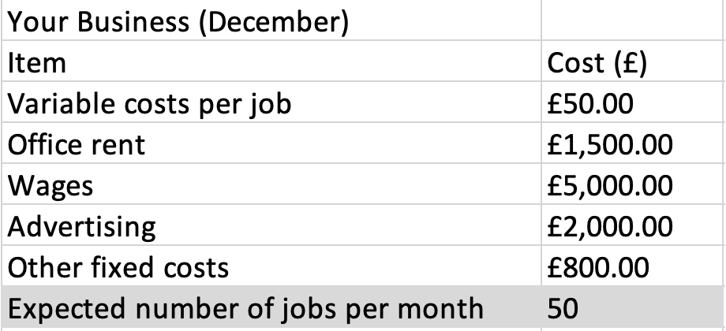
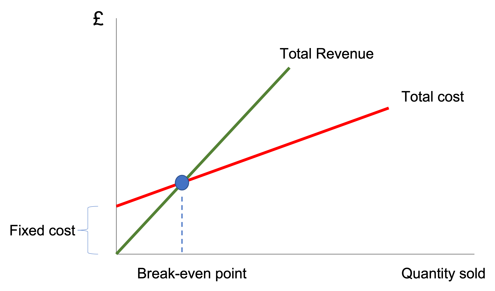

Michaelmas Term 2023
1 Week 8a: Business Cost and Break-Even Analysis
1.1 Learning Goals
Know how to calculate
- Fixed cost and variable cost
- Break-even analysis
1.2 Fixed cost and variable cost
Fixed costs are expenses that a firm must pay whatever amounts of products the firm sells. Examples of fixed cost are rent and advertising expenditure.
Variable costs are expenses that varies in relation to how many products the firm sells. Examples of variable costs are delivery costs, packaging costs.
Total cost = Fixed Costs + Variable Costs \(\times\) Outputs
1.2.1 Problem
The cost of making a one unit of a product is £40. What is the cost to make 20 units?
1.2.2 Watch
1.2.3 Exercises
Look at the table below.

Calculate total cost.
1.3 Break-even analysis
\(Break-even \ quantity = \frac{Fixed \ cost}{Contribution}\)
\(Contribution = Selling \ Price - Variable \ Cost\)

When you calculate the break-even quantity, the number can be with decimals (e.g., 25.3 units). How would you handle the decimal? You can not sell 25.3 units. What you can do is to round the number up to the next whole number regardless of the decimals. In this example, the next whole number is 26. Thus, you must sell 26 units.
1.3.1 Problem
You sell a product with a price of £20 per unit. The variable cost of the product is £10 per unit. The fixed costs associated with the product is £20,000. How many products should you sell to achieve break-even?
1.3.2 Watch
1.3.3 Exercises
A company’s variable costs per product are £5. The daily fixed costs are £100. If the product is sold at £10, calculate the break-even quantity.
If you increase the selling price by 5%, calculate the new break-even quantity.
1.4 Attempt the Exercises on Moodle
At this point, you would have worked on the above exercise questions.
Now, I want you to attempt these questions on Moodle.
Please click the link below:
Once you submit all your answers on Moodle, you complete your learning on this week’s topic.